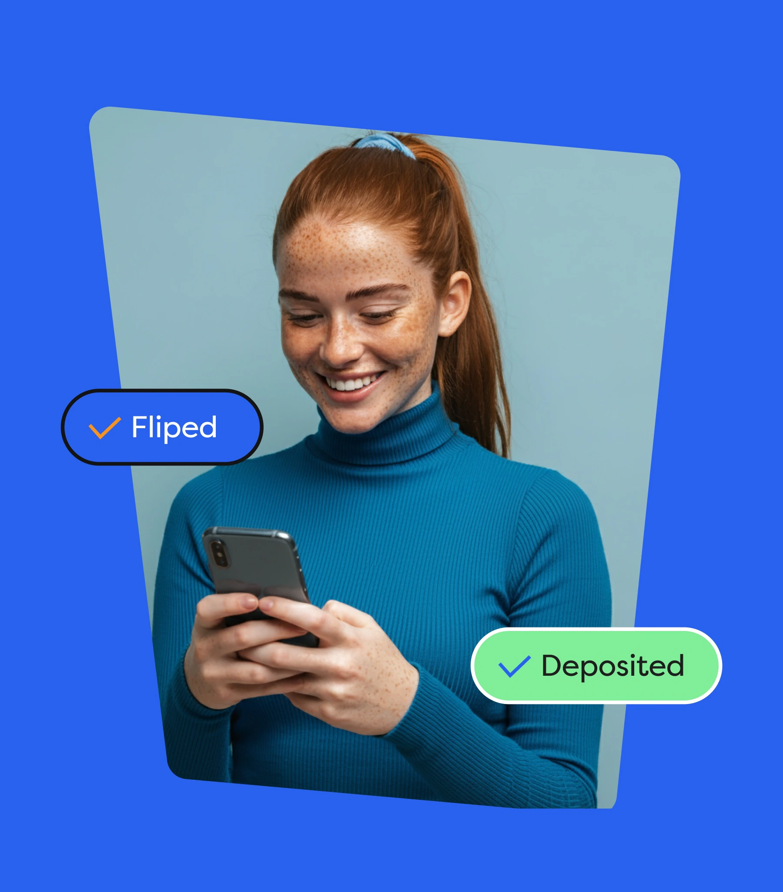
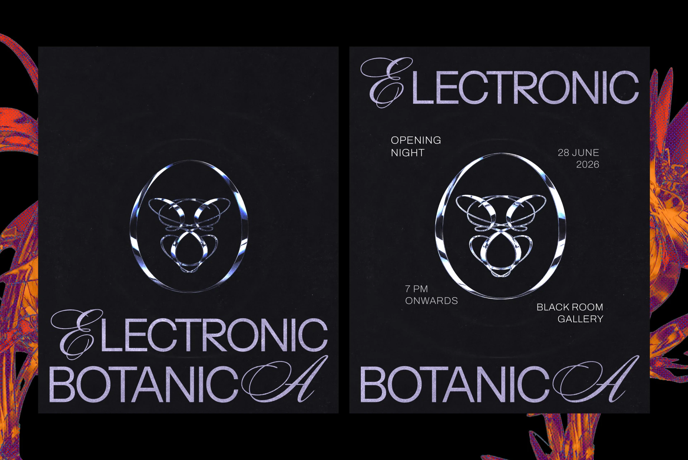
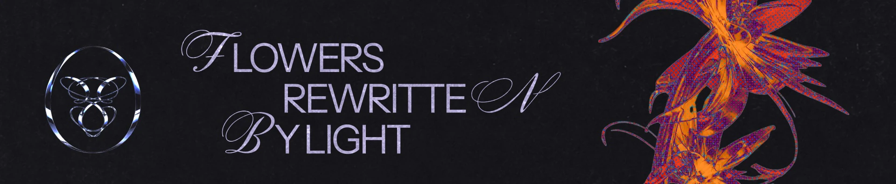
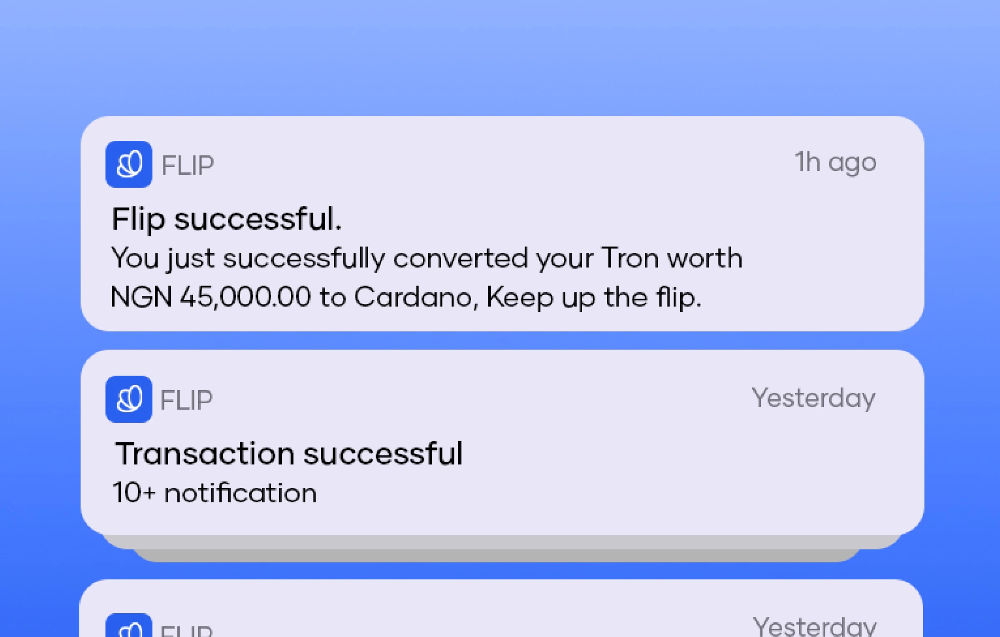
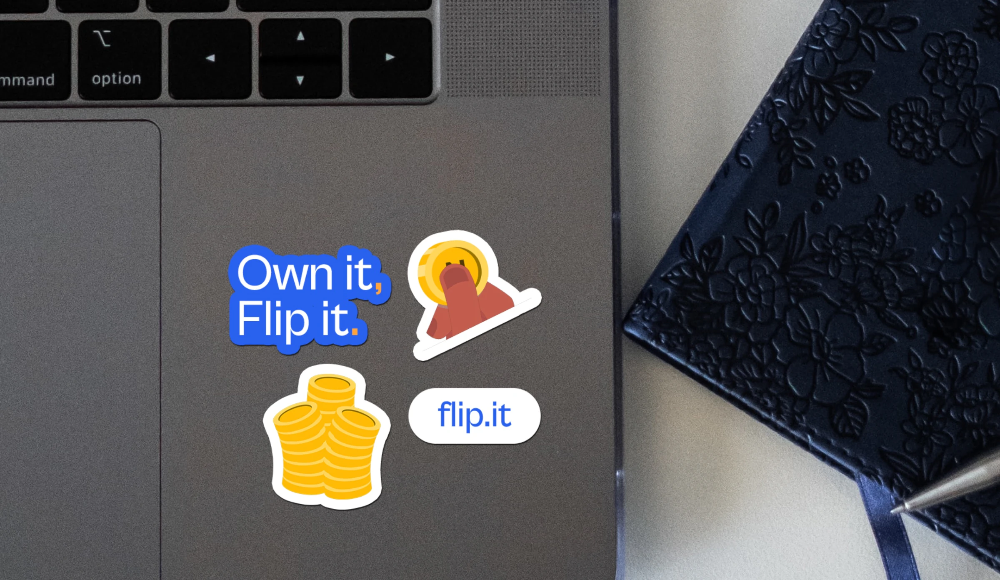

I give an idea a visual language of its own.

/ WORKS

Electronic BotanicaView case study A generative art exhibition exploring the collision between organic forms and digital systems. Project 03PlaceholderArt Direction — artwork to come. Project 04PlaceholderPackaging — artwork to come. Project 05PlaceholderCampaign Design — artwork to come. Project 06PlaceholderDigital Expression — artwork to come./ ABOUT RAHEEM
I’m Raheem Animashaun, an independent designer and creative developer. I make brand identities, digital experiences, and motion with a curiosity for how things look, move, and feel. I collect visual references, question the obvious answer, and keep shaping each idea until it feels distinct, useful, and human.
/ What I shape
Three ways an idea takes shape.
01 — 03



